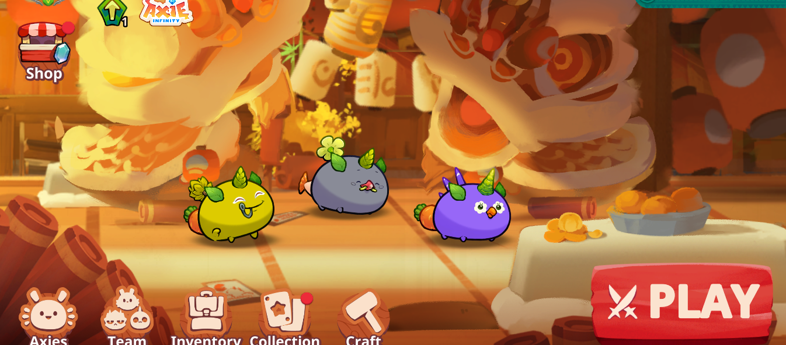

Game-Fi
One of the most exciting aspects of DeFi (Decentralised Finance) is play to earn. What this means is simply, playing games and earning money.
I know it sound surreal to the average person. But yes it is true.
When Defi said it was going to change everything, it wasn't joking.
So what is the idea of play to earn?
Its simply that instead of just playing a game for fun, you can also earn something
called "tokens" or "coins" while you play.
These tokens are like special rewards that you can collect as you do different things in the game,
like when you win an in-game battle, complete tasks, or discover some hidden treasures inside the game.
Once you collect enough tokens, you can exchange them for real world money like naira or dollars or use them
to improve your game character (NFTs).
The power of De-Fi has really empowered gamers.
So when you play a game, you're not just having fun, or wasting investing your time,
you're also earning rewards that you can use in the game and turn into real money!
What are some of the play to earn games that exist? There are a lot of play to earn games. But the ones Defi-Naija has personally tried
-
Axie Infinity: Axie is actually one of the most popular games out there.
And has been around for more than 5 years now with lucrative earning potentials.

In axie, you need to buy pets (called axies) and you can use your pets in battles against other players axies. You get slp tokens when you win and you can exchange that slp tokens for usdc or naira. You need to do your homework on axie though as some axies are stronger that others. So you need to get a strong team so that you can win more battle and earn more. Alternatively, the game also has free axies that you can use to learn the game and have a feel of what you want.